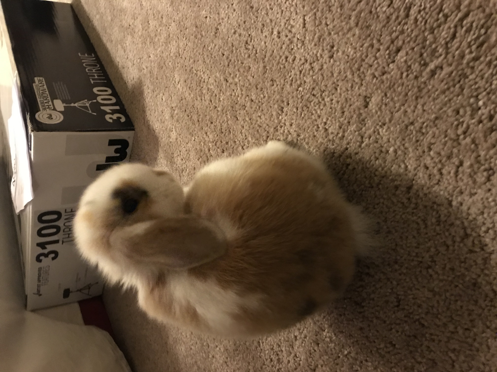
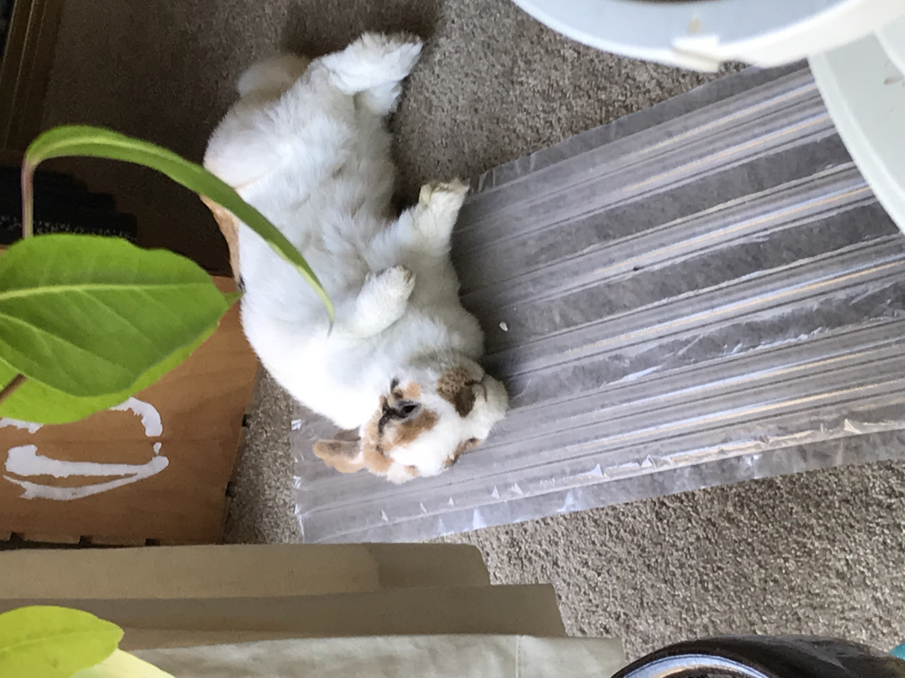
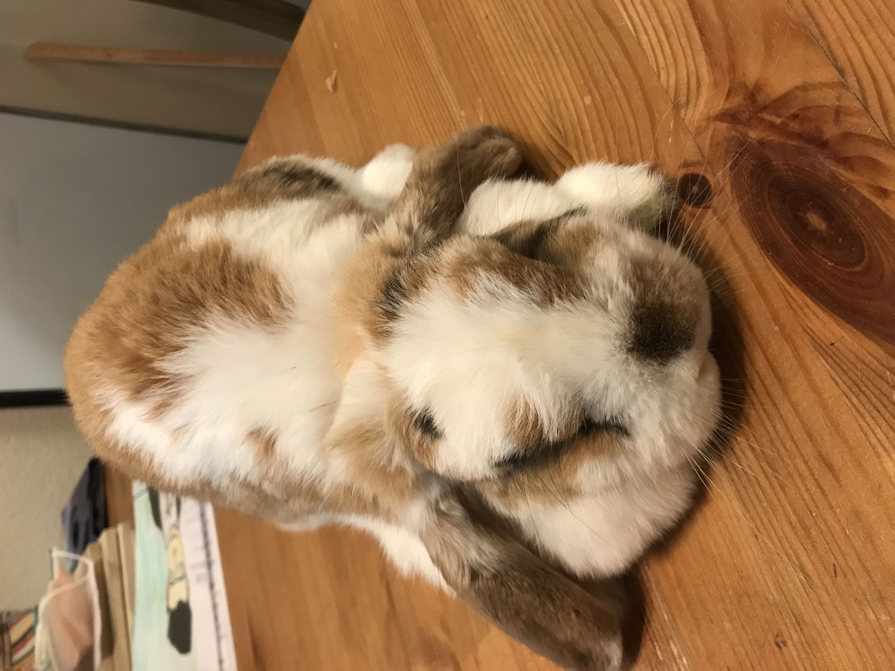
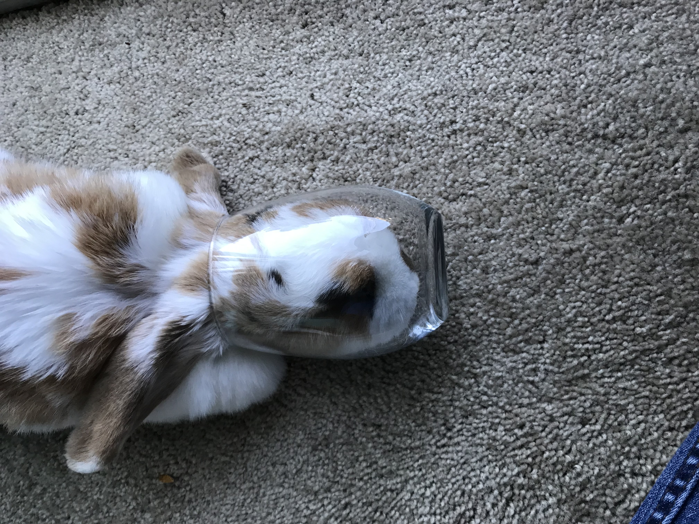
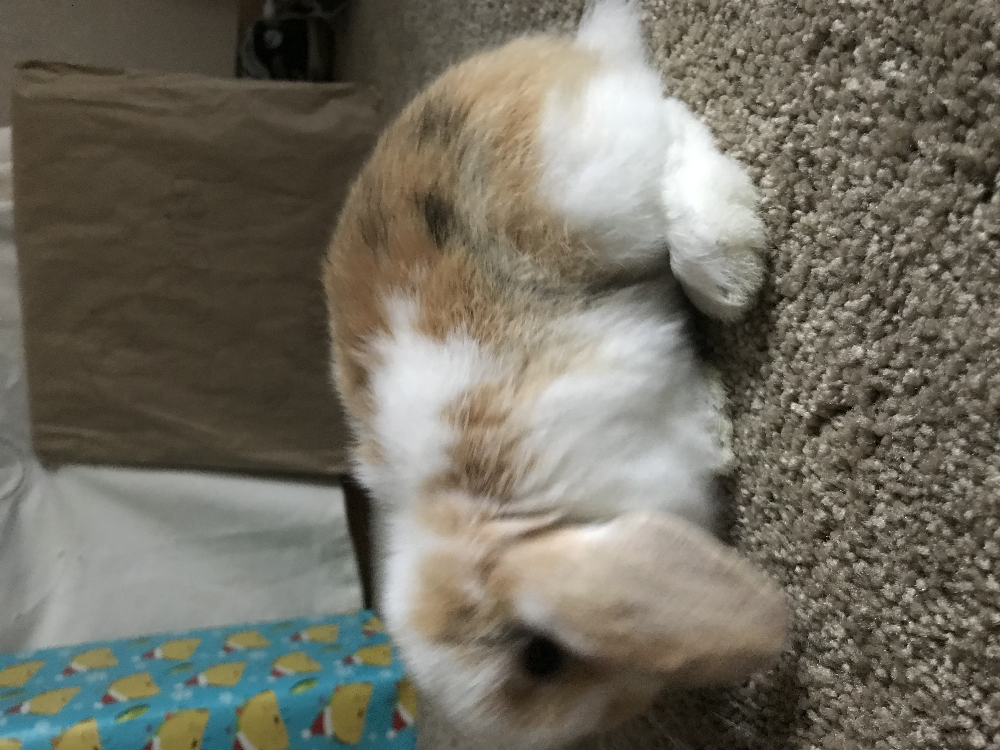
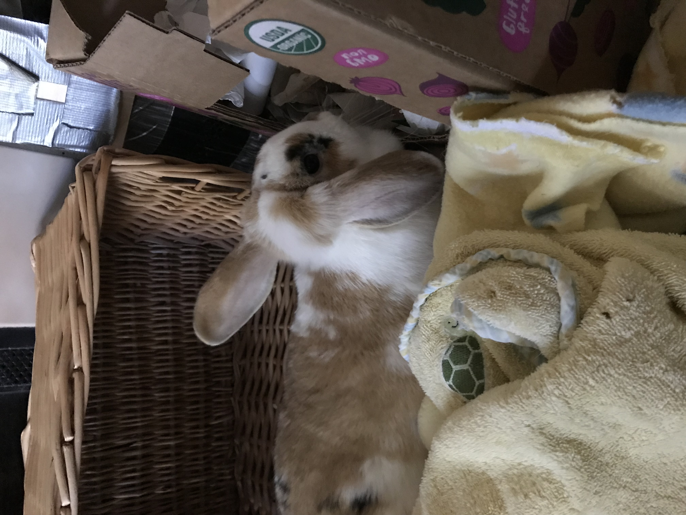

This page was made for my rabbit Cosmo. She died a while ago but sometimes it still affects me.
As I wrote in one of my college essays, I "watch[ed] my rabbit [get] mauled right before my eyes, and fe[lt] her warm blood soak through my sweatshirt"
I'm sorry I wasn't fast enough...





